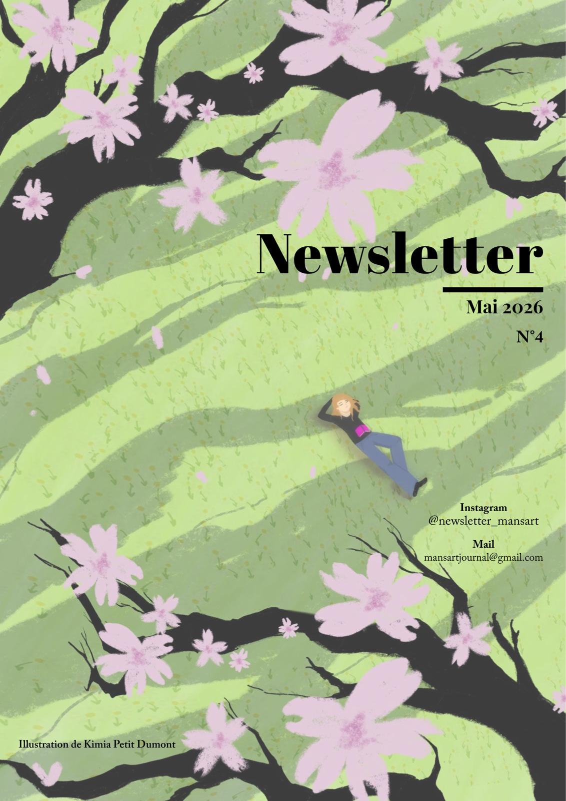

Bientôt l'été
Mai 2026 - Édition #4

Bonjours à toutes, cheres lecteur-rice-s !
Pas de message de la rédaction dans cet article (du moins je n'en ai pas trouvé), mais je tiens à quand même mettre en valeur tout le travail fournit par l'équipe, le directeur et surtout la rédactice en chef, qui n'ont jamais laché l'affaire malgré les difficultés rencontrées. Merci à eux pour leur investissement et leur passion, qui font vivre ce journal et nous permettent de continuer à partager nos idées et nos analyses avec vous.
-La Responsable du Blog